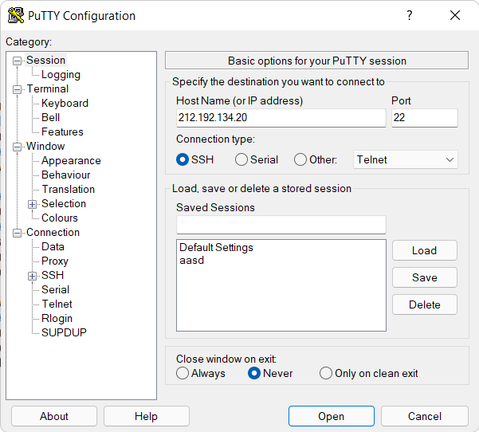

Создание соединения c хостом kubsu-dev.ru по стандартному порту 80 в протокле сетевой печати RAW с помощью программы Putty
Отправка файлов на веб-сервер

Проверка работоспособности index.php

1. Получение главной страницы сайта kubsu-dev.ru методом GET по протоколу HTTP 1.0. По умолчанию сервер отвечает по протоколу HTTP 1.1

2. Получение внутренней страницы сайта u47533.kubsu-dev.ru методом GET по протоколу HTTP 1.1

3. Получение информации о файле file.tar.gz. Необходимо было узнать размер файла не скачивая его. Данная информация содержится в заголовке ответа в графе "Content-Length" и состовляет 11335 байт

4. Определение медиатипа ресурса image.png расположенного на удаленном сервере. Для определения медиатипа был использован HEAD запрос. Данная информация содержится в заголовке ответа в графе "Content-Type"

5. Отправка комментария на удаленный сервер по адрессу u47533.kubsu-dev.ru/index.php. Для отправки комментария был использован POST запрос в теле которого был указан сам комментарий. В ответе от сервера был получен отправленный комментарий, а также строка с текстом "Привет, мир"

6. Получение первых 100 байт из файла file.tar.gz. Для их получения был использован GET запрос с заголовком Range. В заголовке Range указоно что нужно получить именно первые 100 байт из файла

7. Определение кодировки файла index.php. Для этого был отправлен GET запрос.